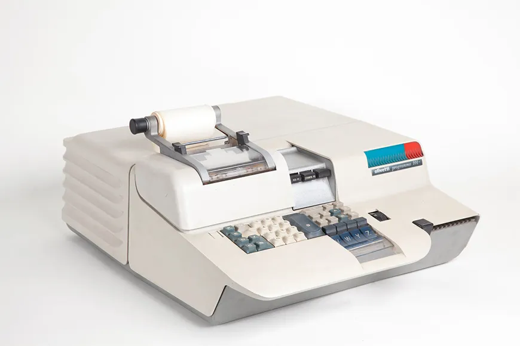
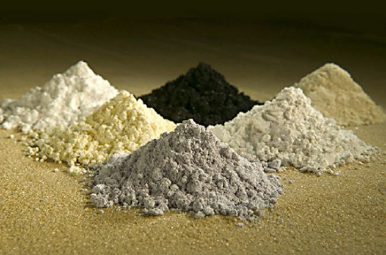

DESKTOPS 
💡FUN FACT :
Only an estimated 15% of global e-waste is fully recycled (Heacock et al, 2016).
What is a Desktop Computer?
Desktop computers, as the name suggest, are computers that are fitted on top of a typical office desk.
Some peripheral devices
typically associated with desktop computers include the mouse, keyboard, monitor and power cord which
together to enable the user to traverse through the computer. For example, the mouse and keyboard helps
users to select and traverse through files present on the computer and the monitor displays the content of
these file. Unlike laptops which are portable, desktop computers are built to be stationary.
Brief History of Desktop Computers
Developed and first unveiled at a public New York World's Fair in the 1960s by inventor Pier Giorgio
Pertto, the Olivetti
Programma 101 was the first desktop computer of its time. The Programma 101 was able to preform
simple arithemtic operations such as addition, subtraction, multiplication, and division.
Although the Programma 101 is considered the first ever desktop computer, the first desktop computer
mass-marketed was the HP 9001A, developed by Hewlett Packard in 1968. Throughout the years that followed,
the desktop computer underwent significant and numerous modification in both hardware and software to
produce the desktop computers we have today.

IMPACTS OF DESKTOPS ON THE ENVIRONMENT
Electronic waste or E-waste, as is referred to by many, are electronic products or products containing
electronic components which have reached the end of the life span. Numerous minerals, went into developing
the electronic devices we have today, most of which are toxic to human health. Minerals such as:
- Lead
- Mercury
- Barium
- Copper
- Cobalt

- These minerals spew from e-waste as a result of the improper disposal of electronic waste (e-waste) in
landfill or other places. These minerals seeps into the soil, affecting the growth of nearby crops while
simultaneously changing the pH value of the soil. Additionally, crops affected by these toxins are
susceptible to illness thereby reducing the productivity levels of farmlands.
- Futhermore, these toxins which seeps into the soil then leaks into underlying water bodies which
eventually run into ponds, lake and rivers,causing water
pollution and adversely affecting the aqautic ecosystem. Aquatic organisms living within these
affected ecosystems or organisms which drinks from these affected water bodies inadvertently develop
ailments from which the eventually die.
- However, some organisms may show little to no signs of illness. These organisms are then caught by
local fishermen, sold in markets and bought by local consumers. These toxins then enter the human body
after consumption of affected organisms, causing ailments such as liver, kidney and brain damages and in
worse cases death.
- The burning of e-waste releases toxic particles such as dioxins and carbon
dioxide, one of the many green house gases. The release of dioxins
into the atmosphere causes reproductive and developmental issues in women and children. The release of
carbon dioxide contribute to global warming by trapping excess heat within the earth's atmosphere.
EFFECTS OF DESKTOP ON THE ENVIRONMENT
A lot toxic chemicals are incorporated into the electronic produces that we have today. Chemicals that
causes chronic ailments such as cancer, brain and kidney failure and even reproductive issues. The
improper disposal of e-waste releases these harmful chemicals into the environments.
- Lead is released into the
enivronment as a result of the improper disposal of e-waste. Lead causes anemia, brain and kidney
failure in low dosage while higher exposure to lead can lead to death. Other chemicals such as mercury
and barium are also released with the improper diposal of e-waste.
- Mercury also causes
brain damage resulting in neurological and behavioural disorders. Some of the neurological sypmtoms to
be expected are cognitive and motor disfunctions. Behavioural disorders include meory loss and insomnia.
Exposure to barium causes nausea,
paralysis, irregular heartbeats and in worse cases death.
SOLUTIONS TO MITIGATE DESKTOPS E-WASTE ON THE ENVIRONMENT
E-waste and its effects have severe consequences on our lives as humans, but you can help reduce these
effects by:
- ✅Buying less unnecessary appliances. This reduces the amount of e-waste that will be diposed while
reducing the carbon dioxide emission produced by the household.
- ✅Educating yourself of what goes into making your electronic products and their eco-friendly
alternatives. By doing so, you are aware of the pontential harm your product(s) may have have on the
environment.
- ✅By ensuring that your e-waste is proprely disposed of by ensuring that it is sent to a trustworthy
organization such as e-Steward, ZWV and others.
- ✅By informing others about the dangers of e-waste and the steps they can take to help reduce its
effects.
-Save the environment and encourage sustainability and restoration!-